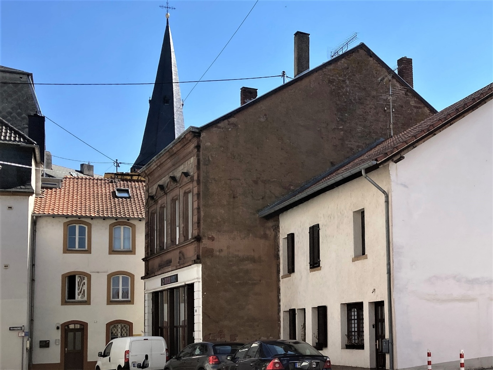
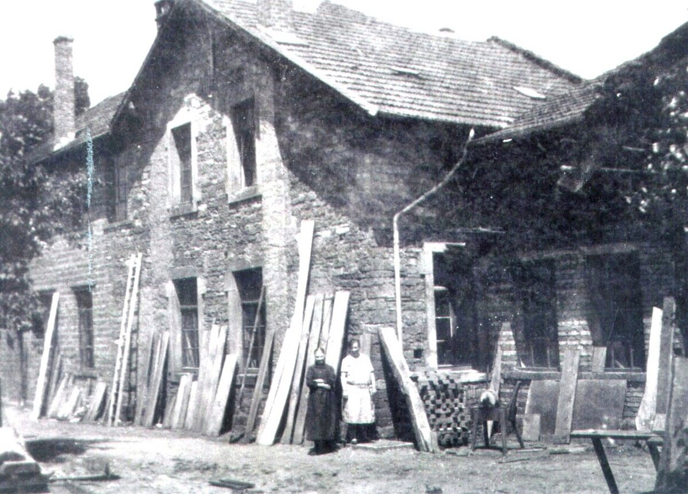

Inhaltsverzeichnis
- 1 Am Feldchen
- 2 Historische Namen
- 3 Historische und neuere Ansichten
- 3.1 Zeitungsartikel
- 3.2 1935 mit Blickrichtung Wagnerstraße
- 3.3 1940 mit Blickrichtung Dienstagsmarkt
- 3.4 Am Feldchen 2023
- 3.5 Merziger Tafel
- 3.6 Ehemaliges Radiogeschäft Bünemann im Feldchen (2021)
- 4 Kartenausschnitt: Am Feldchen
- 5.1 Schreinerei und Holzlagerplatz Zenner
Am Feldchen
Historische Namen
Kleine Feldstraße, Über das Kleine Feld
Historische und neuere Ansichten
Zeitungsartikel |
 |
1935 mit Blickrichtung Wagnerstraße |
|
1940 mit Blickrichtung Dienstagsmarkt |
 |
Am Feldchen 2023 |
 |
Merziger TafelAuch die Räumlichkeiten der Merziger Tafel befinden sich im Feldchen (Gelände ehemalige Schreinerei Zenner) |
 |
Ehemaliges Radiogeschäft Bünemann im Feldchen (2021) |
 |
Kartenausschnitt: Am Feldchen |
 |
SonstigesSchreinerei und Holzlagerplatz ZennerIm alten Feldchen befand sich die Schreinerei und der Holzlagerplatz Peter Zenner (später Gebrüder Zenner). Der zugehörige Verkaufsladen stand an der Hochwaldstraße. |
 |